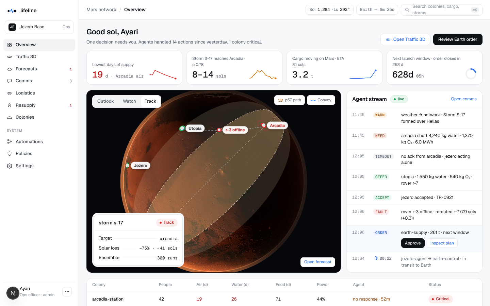
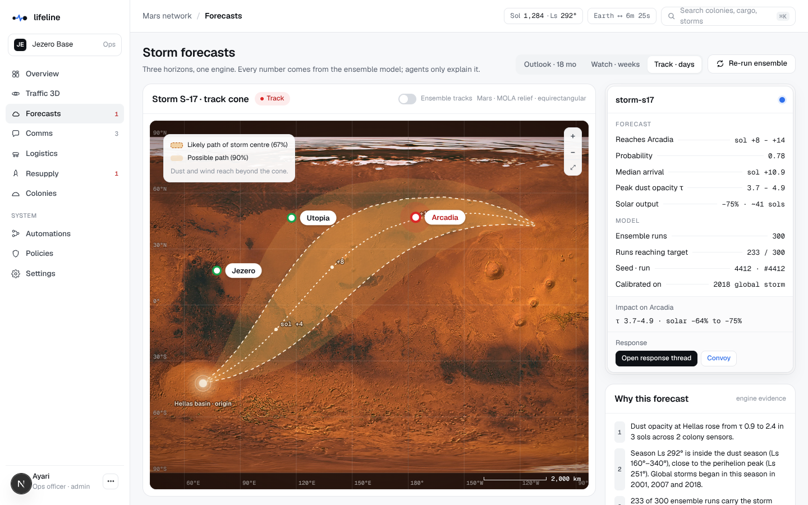
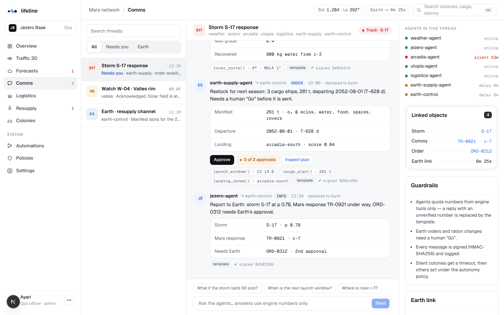
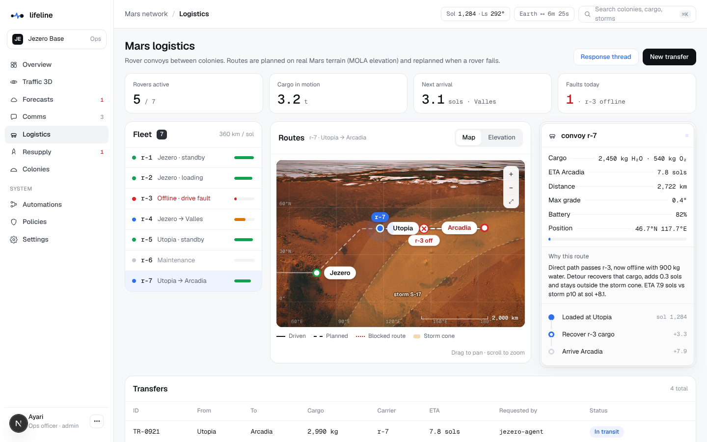
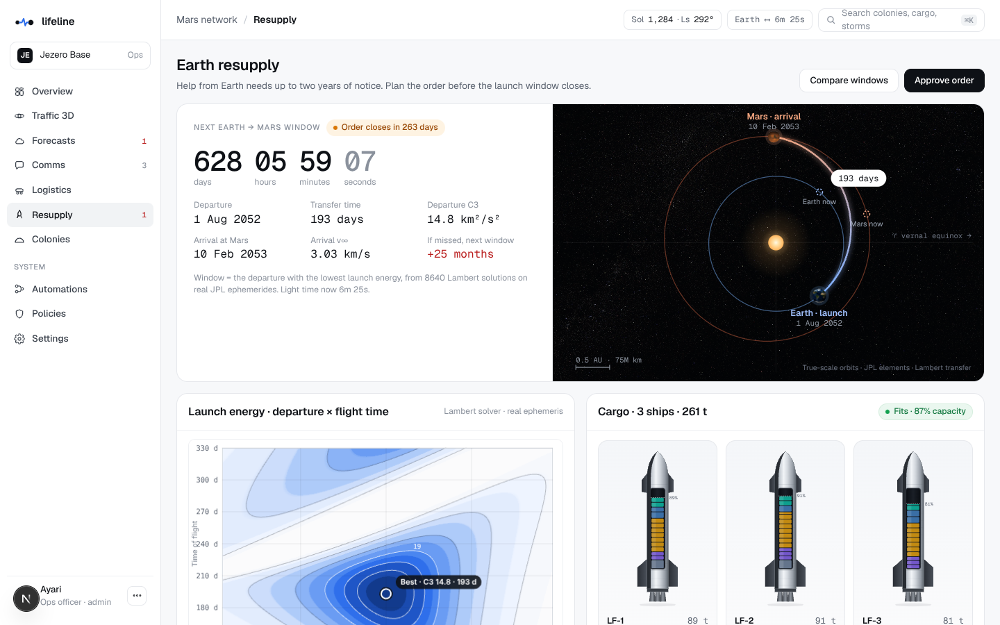
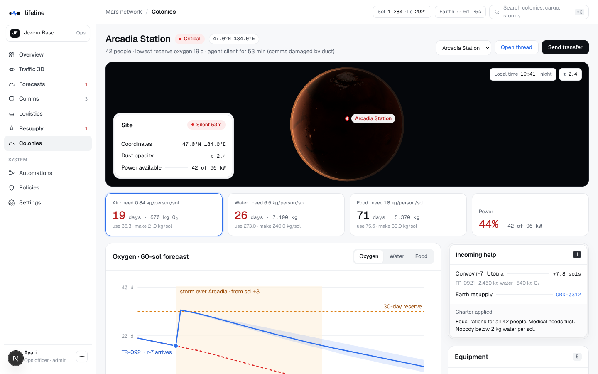
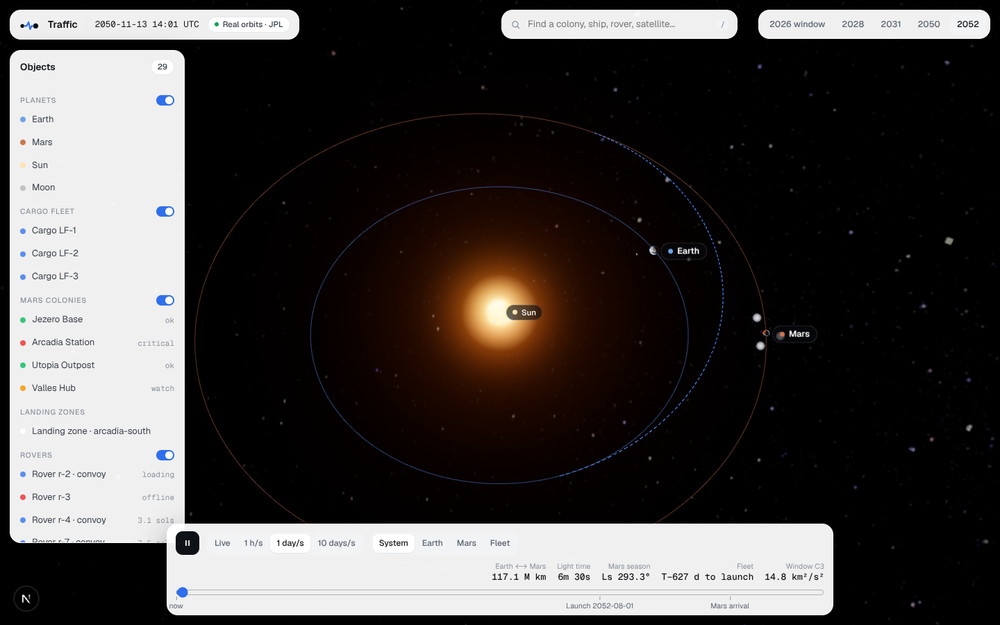

The supply chain between worlds. AI agents forecast danger on Mars and move air, water and food between colonies — and from Earth — before anyone runs out.

Hook. In June 2018 a global dust storm cut the Opportunity rover's daily energy from about 645 Wh to 22 Wh in a week. It never woke up. Now imagine four cities on Mars.
Problem. Rockets can only leave Earth for Mars about every 26 months (the synodic period, 780 days). The trip takes 6–9 months. Messages take 3 to 22 minutes one way. A colony must order what it needs up to two years before it needs it — the longest supply chain humanity will ever run. Today nothing manages it: each colony watches itself, Earth reacts too late, and when a rover breaks nothing replans delivery.
Solution — three jobs. (1) Forecast storms at three horizons, like a weather service (Outlook ~18 months, Watch weeks, Track days with a hurricane-style cone). (2) Coordinate: one AI agent per colony plus weather, logistics and Earth-supply agents talk with a signed protocol (WARN → NEED → OFFER → ACCEPT, TIMEOUT → act alone, ORDER). (3) Deliver: rover convoys on real Mars terrain, rerouted on failure; Earth resupply timed to the launch window, packed and landed.
Golden rule. The math decides, the AI explains. Every number on screen comes from a deterministic engine. Agents only call tools and quote their results. Big actions need a human “Go”.
Close. “On Earth, a late delivery is annoying. On Mars, it is fatal. Lifeline makes sure help is already on its way.”
| Item | Value | Where it comes from |
|---|---|---|
| Date | 12 Nov 2050, 06:00 UTC | Chosen so Mars is in peak dust season. Shown as mission sol 1,284. |
| Mars season | Ls 292°, Mars Year 51 | Computed from Mars' orbit (marsLs). Dust season = Ls 160–340°, perihelion Ls 251°. |
| Earth ⟷ Mars light time | 6 min 26 s | Real distance between the planets that day ÷ speed of light. |
| Next launch window | 1 Aug 2052 · C3 14.8 km²/s² · 193-day flight | Lambert solver scan (lowest launch energy). 628 days away — that is the 26-month problem. |
| Colonies | Jezero 64 people · Arcadia 42 · Utopia 36 · Valles 28 | Real coordinates; stocks are simulated. |
| Storm S-17 | p 0.78 to reach Arcadia, sol +8 to +14 | 233 of 300 seeded ensemble runs (seed 4412). |
| Critical colony | Arcadia, oxygen 19 days | 670 kg ÷ 35.3 kg per sol (42 people × 0.84 kg, NASA BVAD). |
/api/state every 1.5 s → when the world version changes, each page refetches its own payload (/api/overview, /api/forecasts, …).lib/engine): pure TypeScript functions, deterministic, unit-tested. Every number on screen is recomputed from the world by the engine at request time.lib/agents): Claude (Anthropic Messages API with tool use) writes the agent messages and answers questions, calling engine functions as tools. If Claude is off, slow, or quotes a number not in the tool results, a scripted template with the same numbers is used.
Agent events (a timeout after 20 minutes, a message arriving after the light delay) are stored as a schedule in the world. On every read, tick(now) applies the events whose time has come. Light-delayed messages simply carry a deliverAt time: the Earth side doesn't see a Mars message until it “arrives”.
Passwords are bcrypt hashes; sessions are HS256-signed JWTs in httpOnly cookies; the route proxy redirects signed-out users to /login. Every mutating API checks the role on the server (a VIEWER approving gets HTTP 403). Every agent message carries an HMAC-SHA256 signature of its body and payload; every human or demo action is written to an audit log.
| Action | Operator | Earth | Supplier | Viewer | Admin |
|---|---|---|---|---|---|
| Ask agents | ✓ | ✓ | ✓ | ||
| Accept offers, create transfers | ✓ | ✓ | |||
| Approve Earth orders | ✓ | ✓ | ✓ | ||
| Confirm manufacturing | ✓ | ✓ | ✓ | ||
| Edit policies / automations, demo panel | ✓ |
ephemeris.tsWe use NASA JPL's “Approximate Positions of the Planets” (Keplerian elements + rates, valid 1800–2050). For a date we compute the mean anomaly, solve Kepler's equation M = E − e·sin E with Newton's method, and rotate into the ecliptic frame. Accuracy: about one arc-minute — thousands of km, which is negligible for windows and delays.
lambert.ts, windows.tsLambert's problem: “which orbit takes me from Earth's position on the launch day to Mars' position on the arrival day in exactly that time?” We solve it with the universal-variable method (Curtis, Algorithm 5.2) using bisection (it never diverges). The departure speed relative to Earth gives C3 = v∞², the launch energy. The porkchop plot is a grid of 120 departure dates × 72 flight times (8,640 Lambert solutions, ~0.2 s). The window is the date with the lowest C3 found by scanning ~26 months. Test: the real 2026 window comes out 30 Oct 2026 with C3 9.1 km²/s² — the range mission designers publish ✓. The transfer path is drawn by integrating the orbit (Runge–Kutta) from the Lambert departure velocity.
storm.tsAn ensemble, like hurricane forecasting: 300 copies of the storm, each with slightly different drift direction (±19°), speed (log-normal around 680 km/sol), lifetime (~40 sols) and growth. Each copy moves along a great circle in 6-hour steps; a colony is “reached” when it falls inside the dusty radius. Results: probability per colony (runs that reach it ÷ 300), arrival histogram, the cone (directions containing 67% and 90% of the runs), optical depth τ at the colony. All random numbers come from a seeded generator (mulberry32, seed 4412): same seed → identical forecast (tested).
Solar loss = 1 − e−0.313(τ−0.5), calibrated on Opportunity in June 2018 (τ ≈ 10.8 → 645 Wh to 22 Wh, −97%).
resources.tsCrew needs per person per sol from NASA's BVAD: O₂ 0.84 kg, water 6.5 kg (2.5 drink/food + 4.0 hygiene), food 1.8 kg, 98% water recovery. Reserve days = stock ÷ daily use. The 60-sol forecast integrates the stock day by day for each of the 300 storm runs: power = nuclear + solar × solar factor(τ); a power shortfall throttles production with the life-critical order (O₂ protected first, then water, then food lighting). Rover deliveries are added on their arrival sol. We show the median and the 10–90% band, plus a “no action” line.
router.tsA* search on a 1°×1° grid of real Mars elevation (MOLA). Cost = distance × (1 + slope penalty) + storm-cone penalty (cells inside the forecast cone at the time the rover would be there) + blocked zones. Speed 20 km/h, 18 h of driving per sol = 360 km/sol (autonomous nuclear rovers). The path is smoothed and its elevation profile is shown on the Logistics page. Test: Olympus Mons > 12 km, Hellas < −5 km ✓.
packer.ts, landing.tsDemand = each colony's structural deficit (use − production) × 780 days (until the following window) × 1.15 dust-season margin + spares + 2 replacement rovers. The packer splits it into tanks/pallets and fills 3 ships of 100 t (Starship-class assumption), life-critical cargo first and spread across ships (losing one ship never loses all the oxygen). Landing score = 0.35·(1 − slope/10°) + 0.25·(1 − quake risk) + 0.25·(1 − distance/2500 km) + 0.15·(1 − dust τ/5).
season.tsOutlook uses climatology: regional storms peak in three seasons each Mars year (A ~Ls 225°, B ~Ls 275°, C ~Ls 325°; Kass et al. 2016) and planet-encircling storms happened in 3 of 14 recorded Mars years (2001, 2007, 2018). Watch is a transparent heuristic (logistic on dust trend, area and season). We say clearly in the Q&A that these two are heuristics; the Track ensemble is the simulation.
| Guardrail | How it works in the code |
|---|---|
| Number grounding | Every number in Claude's reply must appear in the tool results of that conversation (numbersGrounded). If not → the reply is replaced by the scripted wording of the same facts. |
| Timeouts | 9 s per protocol message, 28 s per question → scripted fallback. The demo never waits on the network. |
| Human Go | Earth orders need 2 approvals from 2 different people; approvals from Mars must physically reach Earth (light delay) before the order is SENT. |
| Policy autonomy | Each action (warn, accept offer, dispatch rover, change rations, Earth order) is AUTO / NOTIFY / GO per comms state (normal, delayed, blackout). Editable on the Policies page. |
| Signatures & audit | HMAC-SHA256 on every message; audit log for every human/demo action. |
| Refusal fallback | Server-side fallback model enabled on the Claude API call; on any error the scripted agent answers. |
Model: Claude Opus 5.5 (claude-opus-5-5) at low effort for short protocol messages and questions; switchable to Sonnet 5.5 with one environment variable. Prompts, tools and roles are listed in docs/AGENT_PROMPTS.md.
Live replay (“Inject storm”): the engine computes the facts of all eight steps first; Claude writes all eight messages in parallel (≈ 3–6 s); they are then released one by one in real time (reply timeout scaled to ~24 s, Earth delay scaled to ~39 s). Each message shows whether Claude or the template wrote it.
Ask the agents: a real tool-use loop — e.g. “What if the storm lasts 60 sols?” makes the agent call resource_forecast(colony: arcadia, resource: O2, storm_duration_sols: 60) and answer with the run-out sol; tool chips under the answer show exactly which tools ran.
scripts/build_textures.py); Earth from NASA Blue Marble (day) and Black Marble (night lights), ocean mask for sun glint, clouds; star background from the NASA Tycho star map; Phobos, Deimos from NASA 3D Resources.Screenshots of the running app (seeded scenario, signed in as Ayari).






| Time | Screen | Do | Say |
|---|---|---|---|
| 0:00 | /login | Sign in as Ayari | “Mission control for four Mars colonies, 2050. That's the real Mars, lit by the real Sun for that date.” |
| 0:10 | Overview | Point at KPIs | “Arcadia has 19 days of oxygen. A storm reaches it in 8–14 sols with 78% probability. One decision needs me.” |
| 0:20 | Forecasts | Track tab, cone | “A hurricane forecast — on Mars. 300 simulation runs on the real terrain map.” |
| 0:45 | Comms | Storm S-17 thread | “Arcadia is silent — after 20 minutes Jezero acts alone. Utopia offers only what keeps its own 90-day reserve. A rover breaks — the logistics agent reroutes and even recovers its cargo.” |
| 1:10 | Comms | Ask “What if the storm lasts 60 sols?” | “The agent calls the engine — see the tool chips. It can't make numbers up.” |
| 1:25 | Resupply | Approve | “Next window in 628 days. Three ships packed. My Go now travels to Earth at the speed of light.” |
| 1:45 | Traffic 3D | Fleet → Mars → Arcadia | “Real orbits, the fleet on its trajectory, the storm on Mars.” |
| 2:00 | — | “Help is already on its way before the danger arrives.” |
Before going on stage: press D → Reset. Backup: set AGENTS_MODE=scripted if the Wi-Fi is bad (same messages, no API). Optional wow moment: press D → “Inject storm (live)” and let the jury watch the agents talk in real time.
| Launch window period | ~26 months (780 days) | Trip | 6–9 months (193 d for 2052) |
| Light delay (scenario) | 6 m 26 s (range 3–22 min) | Ensemble | 300 runs, seed 4412 |
| S-17 → Arcadia | p 0.78, sol +8 to +14 | Opportunity 2018 | 645 → 22 Wh |
| O₂ per person per sol | 0.84 kg (BVAD) | Water / food | 6.5 kg / 1.8 kg |
| Rover | 20 km/h · 360 km/sol · 3 t | Order | 3 ships · 261 t · 2 approvals |
npm i · npm run dev · npm test. Deploy with vercel --prod. Set AUTH_SECRET, ANTHROPIC_API_KEY (the Claude key goes only here), AGENTS_MODE=llm, and add Upstash Redis from the Vercel Marketplace for shared state. Details in docs/DEPLOY.md. Demo accounts: ayari@jezero.base (admin), lina@utopia.base, control@earth.gov, supply@cargo.co, jury@lumen.org — password lifeline-demo.